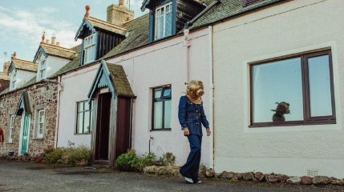

PHOTOSHOT



Lançado em 13 de dezembro de 2019, Fine Line é o segundo álbum de estúdio do cantor e compositor britânico Harry Styles. O disco marcou um momento decisivo em sua carreira solo, consolidando sua identidade musical e explorando uma sonoridade mais madura e experimental. Com influências do rock clássico dos anos 1970, folk e pop psicodélico, Fine Line apresenta um repertório diversificado que transita entre faixas introspectivas e músicas vibrantes e dançantes. O álbum é uma jornada emocional, refletindo temas como amor, saudade, autodescoberta e superação.
Entre os sucessos do álbum, destacam-se Adore You, Watermelon Sugar e Falling, cada um trazendo uma faceta diferente do artista. Adore You, com seu videoclipe cinematográfico ambientado na fictícia ilha de Eroda, conquistou fãs com sua melodia envolvente e atmosfera mágica. Já Watermelon Sugar se tornou um hino do verão, com um instrumental animado e uma letra cheia de metáforas sensoriais. Por outro lado, Falling mostra um lado mais vulnerável de Styles, com vocais emotivos e uma melodia melancólica.
A estética de Fine Line é uma das mais marcantes da carreira de Harry Styles, misturando elementos retrô, psicodélicos e modernos para criar uma identidade visual única. Desde a capa do álbum até os figurinos, clipes e performances ao vivo, tudo em Fine Line reflete um universo vibrante, livre e expressivo.
O disco recebeu diversas indicações e prêmios, além de ter sido um grande sucesso comercial, estreando no topo da Billboard 200 e quebrando recordes de streaming. Mais do que um álbum, Fine Line representa uma fase de experimentação e liberdade criativa para Harry Styles, consolidando-o como um dos artistas mais influentes da atualidade.